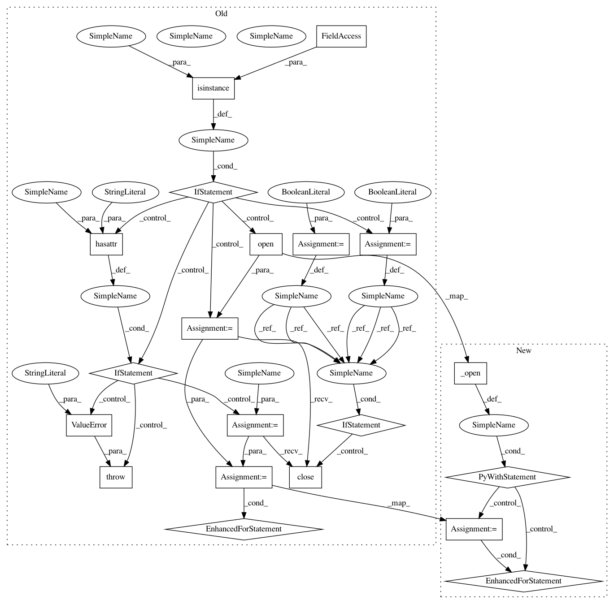

cb786bb07f23af7792f05a940a50da08ee11d406,mir_eval/io.py,,load_ragged_time_series,#Any#Any#Any#Any#,482
Before Change
splitter = re.compile(delimiter)
// Keep track of whether we create our own file handle
own_fh = False
// If the filename input is a string, need to open it
if isinstance(filename, six.string_types):
// Remember that we need to close it later
own_fh = True
// Open the file for reading
input_file = open(filename, "r")
// If the provided has a read attribute, we can use it as a file handle
elif hasattr(filename, "read"):
input_file = filename
// Raise error otherwise
else:
raise ValueError("filename must be a string or file handle")
if header:
start_row = 1
else:
start_row = 0
for row, line in enumerate(input_file, start_row):
// Split each line using the supplied delimiter
data = splitter.split(line.strip())
try:
converted_time = float(data[0])
except (TypeError, ValueError) as exe:
six.raise_from(ValueError("Couldn"t convert value {} using {} "
"found at {}:{:d}:\n\t{}".format(
data[0], float.__name__,
filename, row, line)), exe)
times.append(converted_time)
// cast values to a numpy array. time stamps with no values are cast
// to an empty array.
try:
converted_value = np.array(data[1:], dtype=dtype)
except (TypeError, ValueError) as exe:
six.raise_from(ValueError("Couldn"t convert value {} using {} "
"found at {}:{:d}:\n\t{}".format(
data[1:], dtype.__name__,
filename, row, line)), exe)
values.append(converted_value)
// Close the file handle if we opened it
if own_fh:
input_file.close()
return np.array(times), values
After Change
start_row = 1
else:
start_row = 0
with _open(filename, mode="r") as input_file:
for row, line in enumerate(input_file, start_row):
// Split each line using the supplied delimiter
data = splitter.split(line.strip())
try:
converted_time = float(data[0])
except (TypeError, ValueError) as exe:
six.raise_from(ValueError("Couldn"t convert value {} using {} "
"found at {}:{:d}:\n\t{}".format(
data[0], float.__name__,
filename, row, line)), exe)
times.append(converted_time)
// cast values to a numpy array. time stamps with no values are cast
// to an empty array.
try:
converted_value = np.array(data[1:], dtype=dtype)
except (TypeError, ValueError) as exe:
six.raise_from(ValueError("Couldn"t convert value {} using {} "
"found at {}:{:d}:\n\t{}".format(
data[1:], dtype.__name__,
filename, row, line)), exe)
values.append(converted_value)
return np.array(times), values
In pattern: SUPERPATTERN
Frequency: 3
Non-data size: 20
Instances
Project Name: craffel/mir_eval
Commit Name: cb786bb07f23af7792f05a940a50da08ee11d406
Time: 2016-07-15
Author: brian.mcfee@nyu.edu
File Name: mir_eval/io.py
Class Name:
Method Name: load_ragged_time_series
Project Name: craffel/mir_eval
Commit Name: cb786bb07f23af7792f05a940a50da08ee11d406
Time: 2016-07-15
Author: brian.mcfee@nyu.edu
File Name: mir_eval/io.py
Class Name:
Method Name: load_delimited
Project Name: craffel/mir_eval
Commit Name: cb786bb07f23af7792f05a940a50da08ee11d406
Time: 2016-07-15
Author: brian.mcfee@nyu.edu
File Name: mir_eval/io.py
Class Name:
Method Name: load_patterns